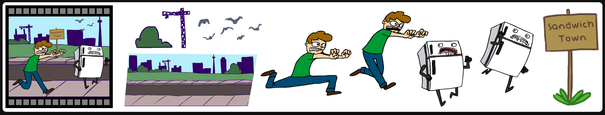

Sprite-from-Sprite: Cartoon Animation Decomposition with Self-supervised Sprite Estimation
ACM Transactions on Graphics (ACM SIGGRAPH Asia 2022) Journal Paper

The "sprites" in real-world cartoons are unique: artists may draw arbitrary sprite animations for expressiveness, or alternatively, artists may also reduce their workload by tweening and adjusting contents. Can we use these properties to do a "reverse engineering" to get the original sprites in digital animation?
Abstract
We present an approach to decompose cartoon animation videos into a set of "sprites" - the basic units of digital cartoons that depict the contents and transforms of each animated object. The sprites in real-world cartoons are unique: artists may draw arbitrary sprite animations for expressiveness, where the animated content is often complicated, irregular, and challenging; alternatively, artists may also reduce their workload by tweening and adjusting sprites, or even reuse static sprites, in which case the transformations are relatively regular and simple. Based on these observations, we propose a sprite decomposition framework using Pixel Multilayer Perceptrons (Pixel MLPs) where the estimation of each sprite is conditioned on and guided by all other sprites. In this way, once those relatively regular and simple sprites are resolved, the decomposition of the remaining "challenging" sprites can simplified and eased with the guidance of other sprites. We call this method ``sprite-from-sprite'' cartoon decomposition. We study ablative architectures of our framework, and the user study demonstrates that our results are the most preferred ones in 19/20 cases.
Files
- Paper (PDF file, 32,830 KB)
See Also
- Supplementary Video - (MP4 file, 28,922 KB) A video describing the core methods and presenting animated results.
- ToonDecompose - (GitHub Project) The GitHub project correlated to this technical paper.
Citation
Lvmin Zhang, Tien-Tsin Wong, and Yuxin Liu.
"Sprite-from-Sprite: Cartoon Animation Decomposition with Self-supervised Sprite Estimation."
ACM Transactions on Graphics (ACM SIGGRAPH Asia 2022), Journal Paper, Dec 2022.
BibTeX
@Article{ZhangSA2022,
author = {Lvmin Zhang and Tien-Tsin Wong and Yuxin Liu},
title = {Sprite-from-Sprite: Cartoon Animation Decomposition with Self-supervised Sprite Estimation},
journal = "Transactions on Graphics (SIGGRAPH Asia 2022)",
year = 2022,
volume = 31,
number = 1,
}